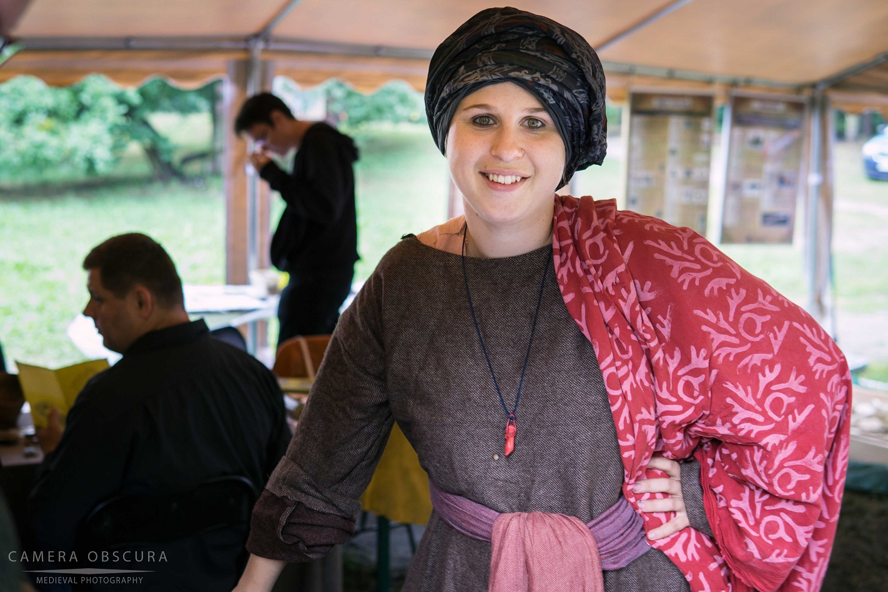

WarsztArt to warsztaty artystyczne pełne pasji
WarsztArt jest autorskim projektem, łączącym odtwarzanie różnorodnych historycznych rzemiosł artystycznych w atrakcyjnej, współczesnej formie interaktywnych zajęć. Jest połaczeniem pasji do sztuki, historii oraz animacji czasu wolnego.
Aleksandra Grabińska - laureatka Stypedium Artystycznego Miasta Stołecznego Warszawy w 2018 roku; absolwentka liceum plastycznego w Warszawie oraz studentka edukacji artystycznej na Akademi Sztuk Pięknych w Łodzi. Od 2012 roku rekonstruktorka historii oraz odtwórczyni rzemiosł artystycznych, obecna na kilkudziesięciu imprezach, projektach i festiwalach historycznych. Fascynatka grafiki warsztatowej, kaligrafii oraz Ebru.